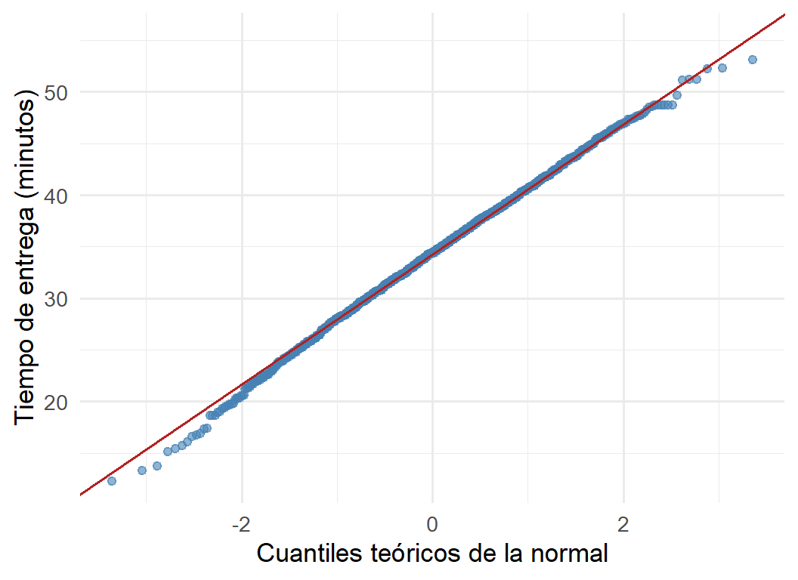

Capítulo 5: Pruebas chi-cuadrado de bondad de ajuste e independencia
Objetivos del capítulo
Al terminar este capítulo, usted estará en capacidad de:
comparar frecuencias observadas con frecuencias esperadas bajo una hipótesis, mediante el estadístico chi-cuadrado;
probar si una variable cualitativa se distribuye según unas proporciones especificadas;
probar si una variable cuantitativa, discreta o continua, sigue una distribución de probabilidad dada;
probar si dos variables son independientes, a partir de una tabla de contingencia;
probar si varias poblaciones tienen la misma distribución (homogeneidad);
reconocer los supuestos de las pruebas chi-cuadrado y qué hacer cuando no se cumplen;
realizar estas pruebas con R.
En Estadística I resumimos datos en tablas de frecuencias: tablas unidimensionales, para una variable, y tablas de contingencia o de doble entrada, para dos variables. En este capítulo aprenderemos a hacer inferencia con esas tablas, para responder dos tipos de preguntas:
¿Se ajustan los datos a un modelo? ¿Es equilibrado un dado? ¿Sigue el número de llamadas por minuto una distribución de Poisson? ¿Son normales los tiempos de entrega de la pizzería? Son las pruebas de bondad de ajuste, que se aplican a tablas unidimensionales.
¿Están relacionadas dos variables? ¿Depende el hábito de fumar del género? ¿Es la preferencia por un medio de transporte la misma en todas las carreras? Son las pruebas de independencia y de homogeneidad, que se aplican a tablas de doble entrada.
Todas se basan en la misma idea y en el mismo estadístico, el de Pearson, que tiene una distribución chi-cuadrado (Devore, 2008, p. 568; Walpole et al., 2012, p. 371). Las variables pueden ser cualitativas o cuantitativas: lo que se analiza siempre son frecuencias, es decir, conteos de observaciones en categorías o en clases.
1 Frecuencias observadas y esperadas
Supongamos que las \(n\) observaciones de una muestra se clasifican en \(k\) categorías (o clases) mutuamente excluyentes. Para cada categoría \(i\) se tienen dos números:
la frecuencia observada\(o_i\): el número de observaciones de la muestra que cayeron en la categoría \(i\);
la frecuencia esperada\(e_i\): el número de observaciones que se esperaría encontrar en la categoría \(i\) si la hipótesis nula fuera verdadera. Si, según \(H_0\), la probabilidad de la categoría \(i\) es \(p_i\), entonces \(e_i = n\,p_i\).
Si \(H_0\) es verdadera, las frecuencias observadas deberían parecerse a las esperadas, aunque no serán exactamente iguales, por el azar del muestreo. La pregunta es si las diferencias \(o_i - e_i\) son lo bastante grandes como para dudar de \(H_0\). Para medirlas en conjunto, Karl Pearson propuso en 1900 el siguiente estadístico (Daniel, 1987, p. 461; Pearson, 1900).
Definición 1 (Estadístico chi-cuadrado de Pearson) El estadístico chi-cuadrado de Pearson es \[
\chi^2 = \sum_{i=1}^{k} \frac{(o_i - e_i)^2}{e_i} .
\]
Cada término compara lo observado con lo esperado en una categoría. Las diferencias se elevan al cuadrado para que las positivas y las negativas no se cancelen, y se dividen entre \(e_i\) para ponerlas en una escala relativa: una diferencia de 10 es grande si se esperaban 20, pero pequeña si se esperaban 2000. Si los datos coinciden exactamente con lo esperado, \(\chi^2 = 0\); cuanto más se alejan, mayor es \(\chi^2\).
Teorema 1 (Distribución del estadístico de Pearson) Si \(H_0\) es verdadera y las frecuencias esperadas no son demasiado pequeñas, el estadístico \(\chi^2\) tiene, aproximadamente, una distribución chi-cuadrado con \[
\nu = k - 1 - m
\] grados de libertad, donde \(k\) es el número de categorías y \(m\) el número de parámetros que se estimaron con los datos para calcular las frecuencias esperadas (Devore, 2008, p. 578; Walpole et al., 2012, p. 371).
Se pierde un grado de libertad porque las frecuencias observadas deben sumar \(n\): conocidas \(k - 1\) de ellas, la última queda determinada (Daniel, 1987, p. 470). La resta de un grado de libertad adicional por cada parámetro estimado se debe a Fisher (1924), quien corrigió así el planteamiento original de Pearson (Fisher, 1924; Stigler, 2008). La intuición es la siguiente: cuando los parámetros se estiman con los mismos datos que luego se usan en la prueba, la distribución de \(H_0\) queda “ajustada” a esos datos, de modo que las frecuencias esperadas resultan más cercanas a las observadas de lo que estarían si los parámetros fueran conocidos, y el estadístico tiende a ser menor. Restar grados de libertad compensa ese efecto.
Una precisión técnica
El resultado de Fisher es exacto, en muestras grandes, cuando los parámetros se estiman a partir de las frecuencias agrupadas (por máxima verosimilitud con los conteos de las categorías). En la práctica, lo usual es estimarlos con los datos individuales, por ejemplo con \(\bar{x}\) y \(s\). Chernoff y Lehmann (1954) demostraron que, en ese caso, la distribución del estadístico queda entre una \(\chi^2(k - 1 - m)\) y una \(\chi^2(k - 1)\), de modo que usar \(k - 1 - m\) grados de libertad hace que la prueba rechace \(H_0\) con una frecuencia ligeramente mayor que \(\alpha\)(Chernoff & Lehmann, 1954; Devore, 2008, p. 581). Es la práctica habitual en los textos, y una forma sencilla de verificar que la conclusión no depende de ese detalle es calcular el valor p con ambos grados de libertad: si los dos llevan a la misma decisión, la conclusión es confiable.
Como valores grandes de \(\chi^2\) indican desacuerdo con \(H_0\), la prueba es siempre de cola derecha: se rechaza \(H_0\) si \(\chi^2_{\text{obs}} > \chi^2_{1-\alpha;\,\nu}\), o si el valor p, \(P(\chi^2 > \chi^2_{\text{obs}})\), es menor o igual que \(\alpha\).
El supuesto de las frecuencias esperadas
La distribución chi-cuadrado es solo una aproximación, y funciona bien cuando las frecuencias esperadas no son demasiado pequeñas. No hay consenso sobre cuán pequeñas pueden ser: los primeros autores sugerían un mínimo de 10, y otros, de 5. Las recomendaciones más seguidas son las de Cochran (Cochran, 1954; Daniel, 1987, pp. 468, 481-482):
en las pruebas de bondad de ajuste a distribuciones unimodales (como la normal o la de Poisson), la frecuencia esperada mínima puede ser tan pequeña como 1;
en las tablas de contingencia con más de un grado de libertad, se admite un mínimo de 1 si no más del 20 % de las celdas tienen frecuencias esperadas menores que 5.
Si no se cumplen, se agrupan categorías vecinas (lo que reduce los grados de libertad). Como criterio práctico, en este curso agruparemos las clases cuando alguna frecuencia esperada sea menor que 5, que es la opción más conservadora y la que recomiendan Walpole et al. (2012, p. 372). Observe que las reglas se refieren a las frecuencias esperadas \(e_i\), no a las observadas.
2 Tablas unidimensionales: la prueba de bondad de ajuste
Una prueba de bondad de ajuste evalúa si una muestra proviene de una población con una distribución de probabilidad especificada. Las hipótesis son:
\(H_0\): la variable sigue la distribución especificada;
\(H_1\): la variable no sigue la distribución especificada.
Las grandes diferencias entre las situaciones están en cómo se calculan las probabilidades \(p_i\) de \(H_0\).
2.1 Proporciones especificadas
El caso más sencillo es el de una variable cualitativa para la que \(H_0\) especifica completamente la proporción de cada categoría.
Ejemplo 1 Para verificar si un dado está equilibrado, se lanza 120 veces y se obtienen los resultados de la Tabla 1. Si el dado es equilibrado, cada cara tiene probabilidad \(1/6\), y la frecuencia esperada de cada una es \(e_i = 120 \times 1/6 = 20\).
Tabla 1: Resultados de 120 lanzamientos de un dado.
Cara
1
2
3
4
5
6
Total
Frecuencia observada \(o_i\)
18
22
16
25
14
25
120
Frecuencia esperada \(e_i\)
20
20
20
20
20
20
120
\((o_i - e_i)^2/e_i\)
0,20
0,20
0,80
1,25
1,80
1,25
5,50
Hipótesis:\(H_0\): el dado es equilibrado (\(p_1 = p_2 = \cdots = p_6 = 1/6\)); \(H_1\): el dado no es equilibrado.
Nivel de significancia:\(\alpha = 0{,}05\).
Estadístico y grados de libertad: no se estimó ningún parámetro (\(m = 0\)), así que \(\nu = 6 - 1 = 5\).
Región de rechazo:\(\chi^2_{\text{obs}} > \chi^2_{0{,}95;\,5} = 11{,}07\).
Valor observado:\(\chi^2_{\text{obs}} = 5{,}50\).
Decisión: como \(5{,}50 < 11{,}07\), no se rechaza \(H_0\) (valor p \(= 0{,}358\)).
Conclusión: las diferencias entre las frecuencias observadas y las esperadas pueden explicarse por el azar; no hay evidencia de que el dado esté cargado.
Ejemplo 2 En sus célebres experimentos con arvejas, publicados en 1866, Gregor Mendel cruzó plantas de semillas redondas y amarillas con plantas de semillas rugosas y verdes. Según su teoría de la herencia, en la segunda generación las semillas debían aparecer en la proporción \(9 : 3 : 3 : 1\)(Mendel, 1866). Sus resultados fueron los de la Tabla 2.
Tabla 2: Resultados del experimento de Mendel.
Tipo de semilla
Redonda y amarilla
Rugosa y amarilla
Redonda y verde
Rugosa y verde
Total
Observada \(o_i\)
315
101
108
32
556
Proporción según la teoría
9/16
3/16
3/16
1/16
1
Esperada \(e_i\)
312,75
104,25
104,25
34,75
556
Con \(\nu = 4 - 1 = 3\) grados de libertad, \[
\chi^2_{\text{obs}} = \frac{(315 - 312{,}75)^2}{312{,}75} + \frac{(101 - 104{,}25)^2}{104{,}25} + \frac{(108 - 104{,}25)^2}{104{,}25} + \frac{(32 - 34{,}75)^2}{34{,}75} = 0{,}47,
\] muy por debajo de \(\chi^2_{0{,}95;\,3} = 7{,}81\) (valor p \(= 0{,}93\)). Los datos son totalmente compatibles con la teoría de Mendel.
En R, la prueba se hace con chisq.test(), indicando las frecuencias observadas y, con el argumento p, las probabilidades de \(H_0\). Si no se indica p, se supone que todas las categorías son igualmente probables:
dado <-c(18, 22, 16, 25, 14, 25)chisq.test(dado) # H0: todas las caras igualmente probables
Chi-squared test for given probabilities
data: dado
X-squared = 5.5, df = 5, p-value = 0.3579
Chi-squared test for given probabilities
data: mendel
X-squared = 0.47002, df = 3, p-value = 0.9254
prueba_mendel$expected # frecuencias esperadas
[1] 312.75 104.25 104.25 34.75
2.2 Ajuste a una distribución discreta
Para una variable cuantitativa discreta, las categorías son sus valores posibles (agrupando los extremos si hace falta), y las probabilidades \(p_i\) se calculan con la distribución de \(H_0\): binomial, de Poisson, etc. Si los parámetros de esa distribución no se conocen, se estiman con los datos, y por cada parámetro estimado se resta un grado de libertad.
Ejemplo 3 En un estudio para determinar la aceptación de un nuevo analgésico, 100 médicos seleccionaron, cada uno, una muestra de 25 pacientes. Después de tomar el nuevo analgésico durante un período determinado, cada paciente indicó si lo prefería al que tomaba antes. Para cada médico se registró cuántos de sus 25 pacientes prefirieron el nuevo analgésico (Tabla 3) (Daniel, 1987, pp. 468-470). ¿Son compatibles estos datos con una distribución binomial?
Hipótesis:\(H_0\): el número de pacientes, de cada 25, que prefieren el nuevo analgésico sigue una distribución binomial con \(n = 25\); \(H_1\): no sigue esa distribución.
Estimación del parámetro.\(H_0\) no especifica \(p\), así que se estima con los datos: en total, 500 de los 2500 pacientes prefirieron el nuevo analgésico, de modo que \(\hat{p} = 500/2500 = 0{,}20\).
Frecuencias esperadas. Con la distribución \(\text{Bin}(25;\ 0{,}20)\) se calcula la probabilidad de cada valor, y la frecuencia esperada es \(e_i = 100\,p_i\). Por ejemplo, \(P(X = 0) = 0{,}8^{25} = 0{,}0038\), de modo que se esperarían \(0{,}38\) médicos con ningún paciente a favor.
Tabla 3: Número de pacientes, de 25, que prefieren el nuevo analgésico, según el médico.
Pacientes que prefieren el nuevo analgésico
0
1
2
3
4
5
6
7
8
9
10 o más
Total
Médicos (observada \(o_i\))
5
6
8
10
10
15
17
10
10
9
0
100
Esperada \(e_i\)
0,38
2,36
7,08
13,58
18,67
19,60
16,33
11,08
6,23
2,94
1,73
100
Varias frecuencias esperadas son pequeñas. Daniel sigue la recomendación de Cochran (ninguna esperada menor que 1): agrupa solo las dos primeras clases, obtiene 10 clases y \(\nu = 10 - 1 - 1 = 8\) grados de libertad, y un estadístico \(\chi^2_{\text{obs}} = 47{,}6\), muy significativo (Daniel, 1987, p. 470). Con el criterio más conservador que adoptamos en este curso (ninguna esperada menor que 5), se agrupan los valores de 0 a 2 y los de 8 o más, lo que deja 7 clases:
Tabla 4: Ajuste a la binomial con las clases agrupadas.
Pacientes
0 a 2
3
4
5
6
7
8 o más
Total
Observada \(o_i\)
19
10
10
15
17
10
19
100
Esperada \(e_i\)
9,82
13,58
18,67
19,60
16,33
11,08
10,91
100
\((o_i - e_i)^2/e_i\)
8,575
0,942
4,025
1,080
0,027
0,106
5,994
20,749
Con \(\nu = 7 - 1 - 1 = 5\) grados de libertad, \(\chi^2_{\text{obs}} = 20{,}75 > \chi^2_{0{,}95;\,5} = 11{,}07\) (valor p \(= 0{,}0009\); con \(\nu = k - 1 = 6\), sería 0,002). Con cualquiera de los dos criterios de agrupación se rechaza \(H_0\): los datos no son compatibles con una distribución binomial.
¿Por qué no se ajusta? La tabla lo sugiere: hay más médicos de lo esperado en los extremos (pocos o muchos pacientes a favor) y menos en el centro. En efecto, el número promedio de pacientes a favor por médico es 5, igual a \(25 \times 0{,}20\), pero su varianza es 6,40, mayor que la que predice la binomial, \(25 \times 0{,}20 \times 0{,}80 = 4\). Recuerde que la binomial supone que la probabilidad de éxito es la misma en todos los ensayos (capítulo 3 de Estadística I). Una explicación posible es que esa probabilidad no sea la misma para los pacientes de todos los médicos, por ejemplo porque atienden poblaciones distintas; los datos por sí solos no permiten confirmarlo.
Cuando se estiman parámetros, R no sabe cuántos grados de libertad restar, así que conviene calcular el valor p directamente:
Ejemplo 4 En el ejercicio 8 del capítulo 1 de Estadística I se registró el número de llamadas recibidas por un centro de atención telefónica en cada uno de 40 minutos consecutivos. ¿Sigue el número de llamadas por minuto una distribución de Poisson?
Hipótesis:\(H_0\): el número de llamadas por minuto sigue una distribución de Poisson; \(H_1\): no la sigue.
Estimación del parámetro.\(H_0\) no especifica el valor de \(\lambda\), así que se estima con la media muestral: \(\hat{\lambda} = \bar{x} = 89/40 = 2{,}225\) llamadas por minuto.
Frecuencias esperadas. Con la distribución de Poisson(2,225) se calculan las probabilidades de cada valor y las frecuencias esperadas \(e_i = 40\,p_i\). La frecuencia esperada de 0 llamadas sería 4,32, menor que 5, de modo que se agrupan los valores 0 y 1. Del mismo modo, los valores de 4 o más se agrupan en una sola clase (Tabla 5).
Tabla 5: Ajuste del número de llamadas por minuto a una distribución de Poisson.
Llamadas por minuto
0 o 1
2
3
4 o más
Total
Observada \(o_i\)
13
12
8
7
40
Probabilidad \(p_i\) (Poisson)
0,3485
0,2675
0,1984
0,1856
1
Esperada \(e_i\)
13,94
10,70
7,94
7,42
40
\((o_i - e_i)^2/e_i\)
0,063
0,158
0,001
0,024
0,246
Grados de libertad: hay \(k = 4\) clases y se estimó \(m = 1\) parámetro, así que \(\nu = 4 - 1 - 1 = 2\).
Decisión:\(\chi^2_{\text{obs}} = 0{,}246 < \chi^2_{0{,}95;\,2} = 5{,}99\) (valor p \(= 0{,}88\)), de modo que no se rechaza \(H_0\). Con \(\nu = k - 1 = 3\) grados de libertad, el valor p sería 0,97: la decisión es la misma. El modelo de Poisson describe bien el número de llamadas por minuto, como se había supuesto en el capítulo 3 de Estadística I.
En R, el cálculo es análogo al del ejemplo binomial:
Para una variable continua, los datos se agrupan primero en clases, como en la tabla de frecuencias agrupada del capítulo 1 de Estadística I, y se compara el número de observaciones de cada clase con el que predice la distribución de \(H_0\). La probabilidad de cada clase \([L_{i-1}, L_i)\) se calcula como \(p_i = F(L_i) - F(L_{i-1})\), donde \(F\) es la función de distribución acumulada de \(H_0\); la primera y la última clase se extienden hasta \(-\infty\) y \(+\infty\) para que las probabilidades sumen 1.
Ejemplo 5 En el capítulo 3 de Estadística I vimos que la distribución normal parecía describir bien los tiempos de entrega de la pizzería. Ahora podemos probarlo formalmente. Con las 1266 entregas, \(H_0\): el tiempo de entrega tiene distribución normal.
Como \(H_0\) no especifica la media ni la desviación estándar, se estiman con los datos: \(\bar{x} = 34{,}23\) y \(s = 6{,}46\) minutos (\(m = 2\) parámetros). Los tiempos se agrupan en seis clases, y para cada una se calcula la probabilidad con la normal estimada. Por ejemplo, para la clase \([30, 35)\), \[
p_3 = \Phi\!\left(\frac{35 - 34{,}23}{6{,}46}\right) - \Phi\!\left(\frac{30 - 34{,}23}{6{,}46}\right) = 0{,}2911,
\qquad e_3 = 1266 \times 0{,}2911 = 368{,}5 .
\]
Tabla 6: Ajuste de los tiempos de entrega a una distribución normal.
Tiempo (minutos)
Menos de 25
\([25, 30)\)
\([30, 35)\)
\([35, 40)\)
\([40, 45)\)
45 o más
Total
Observada \(o_i\)
98
213
371
350
175
59
1266
Probabilidad \(p_i\) (normal)
0,0766
0,1798
0,2911
0,2666
0,1381
0,0478
1
Esperada \(e_i\)
96,98
227,62
368,51
337,54
174,88
60,48
1266
\((o_i - e_i)^2/e_i\)
0,011
0,939
0,017
0,460
0,000
0,036
1,462
Con \(\nu = 6 - 1 - 2 = 3\) grados de libertad, \(\chi^2_{\text{obs}} = 1{,}46 < \chi^2_{0{,}95;\,3} = 7{,}81\) (valor p \(= 0{,}69\)): no se rechaza \(H_0\); con \(\nu = k - 1 = 5\), el valor p sería 0,92, la misma decisión. La distribución normal es un buen modelo para los tiempos de entrega.
library(readxl)pizza <-read_excel("datos/pizza_delivery.xlsx")media <-mean(pizza$time); desv <-sd(pizza$time)limites <-c(-Inf, 25, 30, 35, 40, 45, Inf)observadas <-table(cut(pizza$time, breaks = limites, right =FALSE))p <-diff(pnorm(limites, mean = media, sd = desv))esperadas <-nrow(pizza) * pchi_obs <-sum((observadas - esperadas)^2/ esperadas)gl <-length(observadas) -1-2# se estimaron media y desviaciónc(chi_obs = chi_obs, gl = gl, valor_p =pchisq(chi_obs, gl, lower.tail =FALSE))
chi_obs gl valor_p
1.4624199 3.0000000 0.6909706
La elección de las clases
El resultado de la prueba chi-cuadrado para variables continuas depende de cuántas clases se usen y de dónde se ubiquen sus límites, y al agrupar se pierde información. Por eso, para variables continuas suelen preferirse las pruebas de la sección siguiente, que usan los datos individuales. La prueba chi-cuadrado sigue siendo útil cuando los datos solo están disponibles agrupados en una tabla de frecuencias. Daniel señala que, aunque en la literatura es frecuente usar la chi-cuadrado para probar la normalidad, no es la prueba más apropiada cuando la distribución de \(H_0\) es continua, y recomienda la de Kolmogorov-Smirnov (Daniel, 1987, p. 468).
2.4 Otras pruebas para variables continuas
Para probar si una variable continua sigue una distribución dada hay pruebas que no requieren agrupar los datos (Devore, 2008, p. 584):
La prueba de Shapiro-Wilk, específica para la normalidad, que ya usamos en los capítulos 3 y 4 para los residuales (Shapiro & Wilk, 1965). En estudios de simulación ha resultado ser una de las pruebas de normalidad con mayor potencia (Razali & Wah, 2011). En R, shapiro.test(x), para muestras de 3 a 5000 observaciones.
La prueba de Kolmogorov-Smirnov, que compara la función de distribución acumulada empírica de los datos (la ojiva de Estadística
con la acumulada de la distribución de \(H_0\). Su estadístico es la máxima distancia vertical entre las dos curvas. Sirve para cualquier distribución continua: en R, ks.test(x, "pnorm", mean, sd), ks.test(x, "pexp", rate), etc.
El gráfico Q-Q, que no es una prueba formal pero es la herramienta gráfica más útil: si los puntos siguen la recta, la distribución es adecuada.
Una precaución con Kolmogorov-Smirnov
La prueba de Kolmogorov-Smirnov supone que los parámetros de la distribución de \(H_0\) se conocen. Si se estiman con los mismos datos, como la media y la desviación estándar en el ejemplo de la pizzería, la prueba se vuelve conservadora: tiende a no rechazar \(H_0\). Para la normalidad con parámetros estimados existe una corrección, la prueba de Lilliefors, disponible en el paquete nortest como lillie.test()(Lilliefors, 1967).
Para los tiempos de entrega, la prueba de Shapiro-Wilk da un valor p de 0,18 y la de Kolmogorov-Smirnov, de 0,77: ninguna rechaza la normalidad, en acuerdo con la prueba chi-cuadrado y con el gráfico Q-Q de la Figura 1.
shapiro.test(pizza$time)
Shapiro-Wilk normality test
data: pizza$time
W = 0.99815, p-value = 0.1771
ks.test(pizza$time, "pnorm", mean = media, sd = desv)
Asymptotic one-sample Kolmogorov-Smirnov test
data: pizza$time
D = 0.018592, p-value = 0.7739
alternative hypothesis: two-sided
ggplot(pizza, aes(sample = time)) +stat_qq(color ="steelblue", alpha =0.6) +stat_qq_line(color ="firebrick") +labs(x ="Cuantiles teóricos de la normal", y ="Tiempo de entrega (minutos)")

Figura 1: Gráfico Q-Q de los tiempos de entrega de la pizzería frente a la distribución normal.
3 Tablas de doble entrada: la prueba de independencia
En el capítulo 1 de Estadística I organizamos los datos de dos variables cualitativas en una tabla de contingencia de \(r\) filas y \(c\) columnas, y en el capítulo 2 definimos que dos eventos \(A\) y \(B\) son independientes si \(P(A \cap B) = P(A)\,P(B)\). La prueba de independencia combina las dos ideas: con una muestra de \(n\) unidades, clasificadas según dos variables, permite decidir si las variables son independientes en la población (Walpole et al., 2012, p. 374).
\(H_0\): las dos variables son independientes.
\(H_1\): las dos variables no son independientes (están asociadas).
3.1 Frecuencias esperadas y grados de libertad
Sea \(o_{ij}\) la frecuencia observada en la fila \(i\) y la columna \(j\). Si \(H_0\) es verdadera, la probabilidad de que una unidad caiga en esa celda es el producto de las probabilidades marginales, que se estiman con los totales de la tabla. Multiplicando por \(n\) se obtiene la frecuencia esperada (Walpole et al., 2012, p. 375): \[
e_{ij} = n \cdot \frac{\text{total de la fila } i}{n} \cdot \frac{\text{total de la columna } j}{n} = \frac{(\text{total de la fila } i) \times (\text{total de la columna } j)}{n} .
\] El estadístico es el de Pearson, sumado sobre las \(rc\) celdas de la tabla, \[
\chi^2 = \sum_{i=1}^{r}\sum_{j=1}^{c} \frac{(o_{ij} - e_{ij})^2}{e_{ij}},
\] y, si \(H_0\) es verdadera, tiene aproximadamente una distribución chi-cuadrado con \[
\nu = (r - 1)(c - 1)
\] grados de libertad: es el número de celdas que se pueden llenar libremente cuando se conocen los totales de las filas y de las columnas (Walpole et al., 2012, pp. 375-376). Como en la bondad de ajuste, se rechaza \(H_0\) si \(\chi^2_{\text{obs}} > \chi^2_{1-\alpha;\,\nu}\).
Ejemplo 6 Para saber si la opinión de los votantes sobre una nueva reforma fiscal es independiente de su nivel de ingresos, se clasificó a una muestra aleatoria de 1000 votantes según su nivel de ingresos y según si estaban a favor de la reforma o en contra (Walpole et al., 2012, pp. 374-376). La Tabla 7 muestra las frecuencias observadas y, entre paréntesis, las esperadas.
Tabla 7: Opinión sobre la reforma fiscal según el nivel de ingresos (frecuencias esperadas entre paréntesis).
Reforma fiscal
Ingreso bajo
Ingreso medio
Ingreso alto
Total
A favor
182 (200,9)
213 (209,9)
203 (187,2)
598
En contra
154 (135,1)
138 (141,1)
110 (125,8)
402
Total
336
351
313
1000
Por ejemplo, la frecuencia esperada de votantes de ingreso bajo a favor es \(e_{11} = (598)(336)/1000 = 200{,}9\). Con \(\nu = (2 - 1)(3 - 1) = 2\), \[
\chi^2_{\text{obs}} = \frac{(182 - 200{,}9)^2}{200{,}9} + \cdots + \frac{(110 - 125{,}8)^2}{125{,}8} = 7{,}88 > \chi^2_{0{,}95;\,2} = 5{,}99,
\] con un valor p de 0,020: se rechaza \(H_0\). La opinión sobre la reforma fiscal y el nivel de ingresos no son independientes. (Walpole et al. obtienen 7,85, porque redondean las frecuencias esperadas a un decimal).
3.2 ¿Son independientes el hábito de fumar y el género?
En el capítulo 2 de Estadística I, con la tabla del hábito de fumar según el género de 233 personas, encontramos que la probabilidad de fumar no era la misma para hombres y mujeres en la muestra, y dejamos abierta una pregunta: ¿es esa diferencia lo bastante grande como para concluir que, en la población, las dos variables no son independientes? Ahora podemos responderla.
Ejemplo 7
Tabla 8: Hábito de fumar según el género (frecuencias esperadas entre paréntesis).
Hábito de fumar
Hombre
Mujer
Total
Sí
65 (57,01)
58 (65,99)
123
No
43 (50,99)
67 (59,01)
110
Total
108
125
233
Con \(\nu = (2 - 1)(2 - 1) = 1\), \(\chi^2_{\text{obs}} = 4{,}42 > \chi^2_{0{,}95;\,1} = 3{,}84\) (valor p \(= 0{,}036\)), de modo que, con \(\alpha = 0{,}05\), se rechaza la hipótesis de independencia: el hábito de fumar y el género están asociados. En la muestra, fuma el 60,2 % de los hombres y el 46,4 % de las mujeres.
En una tabla de \(2 \times 2\), la prueba de independencia equivale a la prueba \(z\) para la diferencia de dos proporciones del capítulo 2 (Walpole et al., 2012, p. 378): con la proporción combinada, se obtiene \(z_{\text{obs}} = 2{,}10\), y \(2{,}10^2 = 4{,}42\), el mismo valor del estadístico chi-cuadrado, con el mismo valor p.
La corrección de Yates en tablas de 2 × 2
Con un solo grado de libertad, la aproximación chi-cuadrado puede ser deficiente. Por eso, en las tablas de \(2 \times 2\) se suele aplicar la corrección de Yates por continuidad, \[
\chi^2_{\text{corregida}} = \sum \frac{(\lvert o_{ij} - e_{ij}\rvert - 0{,}5)^2}{e_{ij}} .
\] Si las frecuencias esperadas son grandes, los resultados con y sin corrección son casi iguales; Walpole et al. recomiendan aplicarla cuando las esperadas están entre 5 y 10, y usar la prueba exacta de Fisher cuando son menores que 5 (Walpole et al., 2012, p. 376). La función chisq.test() de R aplica la corrección por defecto en las tablas de \(2 \times 2\)(R Core Team, 2024). Para la tabla del hábito de fumar, el estadístico corregido es 3,88 (valor p \(= 0{,}049\)): la conclusión no cambia, aunque queda muy cerca del límite.
Ejemplo 8 En la pizzería, ¿depende de la sucursal que una entrega tarde más de 30 minutos? Con las 1266 entregas se construye la tabla de contingencia de la sucursal y de si la entrega tardó más de 30 minutos, y se aplica la prueba con R:
demorada
sucursal FALSE TRUE
Centre 58 363
East 174 236
West 84 351
round(prop.table(tabla, margin =1), 3) # proporciones por sucursal
demorada
sucursal FALSE TRUE
Centre 0.138 0.862
East 0.424 0.576
West 0.193 0.807
prueba <-chisq.test(tabla)prueba
Pearson's Chi-squared test
data: tabla
X-squared = 102.4, df = 2, p-value < 2.2e-16
prueba$expected # frecuencias esperadas
demorada
sucursal FALSE TRUE
Centre 105.0837 315.9163
East 102.3381 307.6619
West 108.5782 326.4218
El estadístico es \(\chi^2_{\text{obs}} = 102{,}4\) con 2 grados de libertad, y el valor p es prácticamente cero: el porcentaje de entregas demoradas depende de la sucursal. Es de 86,2 % en Centre, 80,7 % en West y apenas 57,6 % en East, lo que concuerda con lo que vimos en los capítulos 1 y 2: la sucursal East entrega más rápido.
4 Tablas de doble entrada: la prueba de homogeneidad
En la prueba de independencia se toma una sola muestra de una población, y cada unidad se clasifica según las dos variables: los totales de las filas y de las columnas son aleatorios, no los controla el investigador. Pero a veces el investigador fija de antemano los totales de una de las variables: toma muestras independientes, de tamaños determinados, de varias poblaciones, y clasifica cada unidad según la otra variable (Daniel, 1987, p. 487; Walpole et al., 2012, p. 376). La pregunta ya no es si dos variables son independientes, sino si las poblaciones son homogéneas, es decir, si tienen la misma distribución:
\(H_0\): las \(c\) poblaciones tienen la misma distribución (las mismas proporciones en cada categoría).
\(H_1\): al menos una población tiene una distribución diferente.
Aunque la pregunta y el diseño son distintos, los cálculos son exactamente los mismos que en la prueba de independencia: las frecuencias esperadas se obtienen con los totales de filas y columnas, el estadístico es el de Pearson y los grados de libertad son \((r - 1)(c - 1)\)(Walpole et al., 2012, pp. 376-377). Cuando la variable observada tiene solo dos categorías (éxito y fracaso), la prueba de homogeneidad es la prueba de que \(k\) proporciones son iguales, \(H_0: p_1 = p_2 = \cdots = p_k\), que generaliza la comparación de dos proporciones del capítulo 2 (Walpole et al., 2012, p. 378).
Ejemplo 9 En un taller se quiere saber si la proporción de artículos defectuosos es la misma en los turnos matutino, vespertino y nocturno. Se registraron los artículos producidos en cada turno y cuántos fueron defectuosos (Walpole et al., 2012, p. 379):
Tabla 9: Artículos defectuosos por turno (frecuencias esperadas entre paréntesis).
Matutino
Vespertino
Nocturno
Total
Defectuosos
45 (56,97)
55 (56,67)
70 (56,37)
170
No defectuosos
905 (893,03)
890 (888,33)
870 (883,63)
2665
Total
950
945
940
2835
Se plantea \(H_0: p_1 = p_2 = p_3\) contra \(H_1\): las tres proporciones no son iguales, con \(\alpha = 0{,}025\). Con \(\nu = (2 - 1)(3 - 1) = 2\), el valor crítico es \(\chi^2_{0{,}975;\,2} = 7{,}38\), y \(\chi^2_{\text{obs}} = 6{,}23\) (valor p \(= 0{,}044\)). No se rechaza \(H_0\) con \(\alpha = 0{,}025\), aunque, como advierten Walpole et al., con ese valor p sería riesgoso concluir que la proporción de defectuosos es la misma en los tres turnos: con \(\alpha = 0{,}05\) se rechazaría. (Walpole et al. obtienen 6,29 porque redondean las frecuencias esperadas).
# Equivalente, como prueba de igualdad de tres proporciones:prop.test(c(45, 55, 70), c(950, 945, 940))
3-sample test for equality of proportions without continuity correction
data: c(45, 55, 70) out of c(950, 945, 940)
X-squared = 6.2339, df = 2, p-value = 0.04429
alternative hypothesis: two.sided
sample estimates:
prop 1 prop 2 prop 3
0.04736842 0.05820106 0.07446809
¿Independencia u homogeneidad?
La diferencia está en cómo se obtuvieron los datos, no en los cálculos. Si se tomó una sola muestra y luego se clasificó cada unidad según dos variables, es una prueba de independencia. Si se tomaron muestras separadas, de tamaños fijados de antemano, de varias poblaciones, es una prueba de homogeneidad. La distinción importa para formular correctamente las hipótesis y las conclusiones (Daniel, 1987, pp. 487-488).
5 La prueba exacta de Fisher
Cuando las frecuencias esperadas de una tabla de \(2 \times 2\) son pequeñas, la aproximación chi-cuadrado no es confiable. En ese caso se usa la prueba exacta de Fisher (o de Fisher-Irwin), que no usa ninguna aproximación: se basa en la distribución hipergeométrica (Devore, 2008, p. 358; Walpole et al., 2012, p. 376).
La idea es la siguiente. Si se fijan los totales de las filas y de las columnas, y \(H_0\) es verdadera, el número de éxitos en el primer grupo tiene una distribución hipergeométrica, la \(\text{Hip}(N, K, n)\) del capítulo 3 de Estadística I, con \(N\) igual al total de unidades, \(K\) al total de éxitos y \(n\) al tamaño del primer grupo. Con ella se calcula exactamente la probabilidad de obtener una tabla tan extrema como la observada.
Ejemplo 10 En un estudio piloto, 12 pacientes se asignan al azar a dos grupos de 6: uno recibe un tratamiento nuevo y el otro, un placebo. Mejoran 5 de los 6 que recibieron el tratamiento y 1 de los 6 que recibieron el placebo (Tabla 10). ¿Hay asociación entre el tratamiento y la mejoría?
Tabla 10: Resultados del estudio piloto.
Mejoró
No mejoró
Total
Tratamiento
5
1
6
Placebo
1
5
6
Total
6
6
12
Todas las frecuencias esperadas son iguales a 3, menores que 5, así que la prueba chi-cuadrado no es adecuada. Si \(H_0\) es verdadera (no hay asociación), el número \(X\) de pacientes que mejoraron en el grupo del tratamiento tiene distribución \(\text{Hip}(12, 6, 6)\):
Tabla 11: Distribución hipergeométrica Hip(12, 6, 6).
\(x\)
0
1
2
3
4
5
6
\(P(X = x)\)
0,0011
0,0390
0,2435
0,4329
0,2435
0,0390
0,0011
Se observó \(x = 5\), cuya probabilidad es 0,0390. El valor p bilateral suma las probabilidades de todas las tablas tan probables o menos que la observada, que son las de \(x = 0, 1, 5\) y \(6\)(R Core Team, 2024): \[
\text{valor p} = 0{,}0011 + 0{,}0390 + 0{,}0390 + 0{,}0011 = 0{,}080 .
\] Con \(\alpha = 0{,}05\) no se rechaza \(H_0\): con una muestra tan pequeña, la diferencia entre 5 de 6 y 1 de 6 no alcanza a ser significativa. Si se hubiera usado, indebidamente, la prueba chi-cuadrado, se habría obtenido un valor p de 0,021 y se habría rechazado \(H_0\): la aproximación chi-cuadrado falla justamente cuando las frecuencias esperadas son pequeñas.
Fisher's Exact Test for Count Data
data: piloto
p-value = 0.08009
alternative hypothesis: true odds ratio is not equal to 1
95 percent confidence interval:
0.800351 1389.408380
sample estimates:
odds ratio
16.60315
dhyper(0:6, m =6, n =6, k =6) # distribución Hip(12, 6, 6)
¿Siguen los datos las proporciones \(p_1, \ldots, p_k\)?
\(k - 1\)
chisq.test(x, p = ...)
Bondad de ajuste con \(m\) parámetros estimados
¿Siguen los datos una distribución (binomial, Poisson, normal)?
\(k - 1 - m\)
Cálculo con pchisq()
Independencia
¿Son independientes dos variables?
\((r - 1)(c - 1)\)
chisq.test(tabla)
Homogeneidad
¿Tienen varias poblaciones la misma distribución?
\((r - 1)(c - 1)\)
chisq.test(tabla), prop.test(x, n)
Exacta de Fisher
Independencia en tablas \(2 \times 2\) con esperadas pequeñas
No aplica
fisher.test(tabla)
Normalidad
¿Proviene una variable continua de una normal?
No aplica
shapiro.test(x), ks.test(x, "pnorm", ...)
El objeto que devuelve chisq.test() contiene, además del estadístico y del valor p, las frecuencias esperadas ($expected), que conviene revisar siempre para verificar el supuesto de las frecuencias esperadas, y los residuales de Pearson ($residuals), \((o_{ij} - e_{ij})/\sqrt{e_{ij}}\), que indican qué celdas contribuyen más al estadístico (R Core Team, 2024).
7 Ejercicios propuestos
7.1 Pruebas de bondad de ajuste
Una empresa de mercadeo afirma que, en una ciudad, el 40 % de los consumidores prefiere la marca A de una gaseosa, el 35 % la marca B y el 25 % la marca C. En una muestra de 300 consumidores, 105 prefirieron la marca A, 120 la B y 75 la C. ¿Hay evidencia, con \(\alpha = 0{,}05\), de que las preferencias difieren de las afirmadas por la empresa?
Un banco quiere saber si el número de clientes que llegan a una oficina es el mismo todos los días hábiles. En una semana llegaron 132 clientes el lunes, 105 el martes, 98 el miércoles, 110 el jueves y 155 el viernes. Pruebe la hipótesis con \(\alpha = 0{,}05\).
Un ejemplo clásico de la distribución de Poisson es el del estadístico Ladislaus von Bortkiewicz, que registró el número de soldados del ejército prusiano muertos por coces de caballo en 200 registros anuales de cuerpos de caballería (Bortkiewicz, 1898): en 109 registros no hubo muertes, en 65 hubo una, en 22 dos, en 3 tres y en 1 cuatro.
Estime \(\lambda\) y calcule las frecuencias esperadas.
Agrupe las clases necesarias para cumplir la regla de Cochran.
Pruebe, con \(\alpha = 0{,}05\), si los datos siguen una distribución de Poisson.
En un proceso se inspeccionan muestras de 4 piezas, y se registra el número de defectuosas. En 100 muestras se obtuvieron: 0 defectuosas en 52 muestras, 1 en 34, 2 en 11 y 3 o más en 3. Pruebe si el número de defectuosas sigue una distribución binomial con \(n = 4\), estimando \(p\) con los datos. (Sugerencia: \(\hat{p}\) es el número total de defectuosas dividido entre el número total de piezas inspeccionadas).
Con la base pizza_delivery.xlsx:
pruebe, con la prueba chi-cuadrado, si la temperatura de las pizzas sigue una distribución normal, usando clases de 5 °C de amplitud;
aplique las pruebas de Shapiro-Wilk y de Kolmogorov-Smirnov y construya el gráfico Q-Q. ¿Coinciden las conclusiones?
Genere en R una muestra de 200 datos de una distribución exponencial con media 10 (rexp(200, rate = 1/10)), y pruebe con Kolmogorov-Smirnov si provienen de una exponencial con esa media y si provienen de una normal. ¿Qué concluye en cada caso?
7.2 Pruebas de independencia y de homogeneidad
En una muestra de 300 egresados se registró el área de formación y si consiguieron empleo en los seis meses siguientes al grado:
Ingeniería
Economía
Salud
Ciencias
Con empleo
62
55
48
35
Sin empleo
18
25
22
35
Plantee las hipótesis y calcule las frecuencias esperadas.
¿Es independiente la empleabilidad del área de formación, con \(\alpha = 0{,}05\)? Resuelva a mano y con chisq.test().
Examine los residuales de Pearson. ¿Qué área contribuye más al estadístico?
Con los datos de la encuesta de 40 estudiantes de Estadística I (encuesta_estudiantes.xlsx), pruebe si el medio de transporte es independiente de la carrera. Revise las frecuencias esperadas: ¿se cumple el supuesto? Si no, agrupe categorías de manera razonable y repita la prueba.
Se seleccionaron muestras independientes de 150 clientes de cada una de tres sucursales de un banco, y se les preguntó por su nivel de satisfacción (alto, medio, bajo). Explique por qué se trata de una prueba de homogeneidad y no de independencia, y plantee las hipótesis.
Con la base pizza_delivery.xlsx, pruebe si la proporción de clientes que recibieron vino gratis (free_wine) es la misma para los distintos conductores (driver). ¿Es una prueba de independencia o de homogeneidad? Justifique.
En un ensayo con 10 pacientes, 4 de 5 mejoraron con el tratamiento A y 1 de 5 con el tratamiento B.
¿Por qué no es adecuada la prueba chi-cuadrado?
Calcule, con la distribución hipergeométrica, el valor p de la prueba exacta de Fisher y verifíquelo con fisher.test().
Para la tabla del hábito de fumar según el género, verifique con prop.test() y con chisq.test() que la prueba de dos proporciones y la prueba de independencia dan el mismo valor p, con y sin la corrección de Yates.
Referencias
Bortkiewicz, L. von. (1898). Das Gesetz der kleinen Zahlen. B. G. Teubner.
Chernoff, H., & Lehmann, E. L. (1954). The Use of Maximum Likelihood Estimates in \(\chi^2\) Tests for Goodness of Fit. The Annals of Mathematical Statistics, 25(3), 579-586. https://doi.org/10.1214/aoms/1177728726
Cochran, W. G. (1954). Some Methods for Strengthening the Common \(\chi^2\) Tests. Biometrics, 10(4), 417-451. https://doi.org/10.2307/3001616
Daniel, W. W. (1987). Bioestadística: Base para el análisis de las ciencias de la salud (M. Guzmán Ortiz & A. L. Babinsky Epstein, Trads.; 3.ª ed.). Limusa.
Devore, J. L. (2008). Probabilidad y estadística para ingeniería y ciencias (7.ª ed.). Cengage Learning.
Fisher, R. A. (1924). The Conditions Under Which \(\chi^2\) Measures the Discrepancey Between Observation and Hypothesis. Journal of the Royal Statistical Society, 87(3), 442-450. https://doi.org/10.2307/2341149
Lilliefors, H. W. (1967). On the Kolmogorov-Smirnov Test for Normality with Mean and Variance Unknown. Journal of the American Statistical Association, 62(318), 399-402. https://doi.org/10.1080/01621459.1967.10482916
Mendel, G. (1866). Versuche über Pflanzen-Hybriden. Verhandlungen des naturforschenden Vereines in Brünn, 4, 3-47.
Pearson, K. (1900). On the Criterion that a Given System of Deviations from the Probable in the Case of a Correlated System of Variables is Such that it Can be Reasonably Supposed to Have Arisen from Random Sampling. The London, Edinburgh, and Dublin Philosophical Magazine and Journal of Science, 50(302), 157-175. https://doi.org/10.1080/14786440009463897
R Core Team. (2024). R: A Language and Environment for Statistical Computing. R Foundation for Statistical Computing. https://www.R-project.org/
Razali, N. M., & Wah, Y. B. (2011). Power Comparisons of Shapiro-Wilk, Kolmogorov-Smirnov, Lilliefors and Anderson-Darling Tests. Journal of Statistical Modeling and Analytics, 2(1), 21-33.
Shapiro, S. S., & Wilk, M. B. (1965). An Analysis of Variance Test for Normality (Complete Samples). Biometrika, 52(3–4), 591-611. https://doi.org/10.1093/biomet/52.3-4.591
Stigler, S. M. (2008). Karl Pearson’s Theoretical Errors and the Advances They Inspired. Statistical Science, 23(2), 261-271. https://doi.org/10.1214/08-STS256
Walpole, R. E., Myers, R. H., Myers, S. L., & Ye, K. (2012). Probabilidad y estadística para ingeniería y ciencias (9.ª ed.). Pearson Educación.